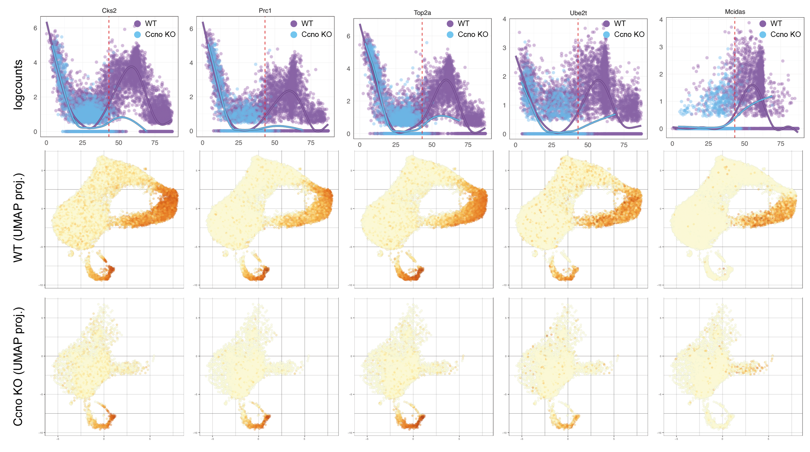

# Load data
MCCs <- readRDS('data/MCCs/MCCs_processed.rds')
CcnoKO <- readRDS('data/MCCs/CcnoKO_processed.rds')
# Infer lineages
library(slingshot)
MCCs_slingshot <- slingshot(
MCCs,
reducedDim = 'PCA',
clusterLabels = 'annotation',
start.clus = 'CyclingProgenitors',
end.clus = 'MCCs',
approx_points = 60
)
slingLineages(MCCs_slingshot)
# Plot individual lineage tracing
MCCs_slingData <- embedCurves(MCCs_slingshot, "corrected_UMAP")
MCCs$slingshot1 <- colData(MCCs_slingshot)[, 'slingPseudotime_1']
MCCs$slingshot2 <- colData(MCCs_slingshot)[, 'slingPseudotime_2']
p <- cowplot::plot_grid(
scater::plotReducedDim(MCCs, "corrected_UMAP", colour_by = 'slingshot1', text_by = 'annotation') +
geom_path(
data = setNames(as.data.frame(slingCurves(MCCs_slingData)[[1]]$s[slingCurves(MCCs_slingData)[[1]]$ord,]), c('X', 'Y')),
mapping = aes(x = X, y = Y),
inherit.aes = FALSE, size = 2
),
scater::plotReducedDim(MCCs, "corrected_UMAP", colour_by = 'slingshot2', text_by = 'annotation') +
geom_path(
data = setNames(as.data.frame(slingCurves(MCCs_slingData)[[2]]$s[slingCurves(MCCs_slingData)[[2]]$ord,]), c('X', 'Y')),
mapping = aes(x = X, y = Y),
inherit.aes = FALSE, size = 2
)
)
ggsave('data/MCCs/WTs-trajectories.pdf', w = 10, h = 5)Demonstration: Trajectory inference and pseudotime
Goals:
- Infer trajectory in a single scRNAseq dataset
- Infer a trajectories for conditions in an integrated dataset
- Perform DE expression analysis on a portion of the trajectory
1. Trajectories in WT MCCs
2. Infer a single trajectory for WT + CcnoKO MCCs
Bl6J_WT <- readRDS('data/MCCs/Bl6J_WT.rds')
Bl6N_WT <- readRDS('data/MCCs/Bl6N_WT.rds')
CcnoKO <- readRDS('data/MCCs/CcnoKO.rds')
# Merge all datasets together
Bl6J_WT$sample <- 'WT'
Bl6N_WT$sample <- 'WT'
CcnoKO$sample <- 'KO'
rowData(CcnoKO) <- rowData(CcnoKO)[, c(1:7)]
rowData(Bl6J_WT) <- rowData(CcnoKO)
rowData(Bl6N_WT) <- rowData(CcnoKO)
mergedSCEs <- cbind(Bl6J_WT, Bl6N_WT, CcnoKO)
mergedSCEs <- scuttle::logNormCounts(mergedSCEs)
reducedDim(mergedSCEs, 'PCA') <- scater::calculatePCA(mergedSCEs)
# Find markers in WT cells
markers <- scran::findMarkers(
mergedSCEs,
groups = factor(mergedSCEs$annotation),
pval.type = "any"
) %>% lapply(function(x) {
as.data.frame(x) %>%
arrange(desc(summary.logFC)) %>%
rownames_to_column('marker') %>%
'['(, 1:5) %>%
filter(summary.logFC > log2(2) & p.value < 0.05) %>%
pull(marker)
}) %>% do.call(c, .) %>% unique()
# Correct samples assuming they are all the same
mergedSCEs_corrected <- batchelor::fastMNN(
mergedSCEs,
batch = paste0(mergedSCEs$sample, '_', mergedSCEs$batch),
d = 50,
k = 15,
correct.all = TRUE,
subset.row = which(rownames(mergedSCEs) %in% markers),
BSPARAM = BiocSingular::RandomParam(deferred = TRUE)
)
reducedDim(mergedSCEs, 'PCA_corrected') <- reducedDim(mergedSCEs_corrected, 'corrected')
reducedDim(mergedSCEs, 'UMAP_corrected') <- scater::calculateUMAP(mergedSCEs, dimred = "PCA_corrected")
p <- cowplot::plot_grid(
scater::plotReducedDim(mergedSCEs, "PCA_corrected", colour_by = 'annotation', text_by = 'annotation') + ggtitle('bound WTs + CcnoKO, corrected PCA, clusters'),
scater::plotReducedDim(mergedSCEs, "PCA_corrected", colour_by = 'sample', text_by = 'sample') + ggtitle('bound WTs + CcnoKO, corrected PCA, samples'),
scater::plotReducedDim(mergedSCEs, "PCA_corrected", colour_by = 'batch', text_by = 'batch') + ggtitle('bound WTs + CcnoKO, corrected PCA, genotypes'),
scater::plotReducedDim(mergedSCEs, "UMAP_corrected", colour_by = 'annotation', text_by = 'annotation') + ggtitle('bound WTs + CcnoKO, corrected UMAP, clusters'),
scater::plotReducedDim(mergedSCEs, "UMAP_corrected", colour_by = 'sample', text_by = 'sample') + ggtitle('bound WTs + CcnoKO, corrected UMAP, samples'),
scater::plotReducedDim(mergedSCEs, "UMAP_corrected", colour_by = 'batch', text_by = 'batch') + ggtitle('bound WTs + CcnoKO, corrected UMAP, genotypes'),
ncol = 3
)
# Slingshot TI
mergedSCEs <- mergedSCEs[, !is.na(mergedSCEs$annotation)]
reducedDim(mergedSCEs, 'PCA_corrected_2') <- reducedDim(mergedSCEs, 'PCA_corrected')[, 1:48]
mergedSCEs_slingshot <- slingshot(
mergedSCEs,
reducedDim = 'PCA_corrected_2',
clusterLabels = 'annotation',
start.clus = 'CyclingProgenitors',
end.clus = 'MCCs',
approx_points = 30
)
slingLineages(mergedSCEs_slingshot)
# Plot individual lineage tracing
mergedSCEs_slingData <- embedCurves(mergedSCEs_slingshot, "UMAP_corrected")
mergedSCEs$slingshot1 <- pathStats(mergedSCEs_slingData)[[1]][, 'Lineage1']
p <- scater::plotReducedDim(mergedSCEs, "UMAP_corrected", colour_by = 'slingshot1', text_by = 'annotation') +
geom_path(
data = setNames(as.data.frame(slingCurves(mergedSCEs_slingData)[[1]]$s[slingCurves(mergedSCEs_slingData)[[1]]$ord,]), c('X', 'Y')),
mapping = aes(x = X, y = Y),
inherit.aes = FALSE, size = 2
)
ggsave('data/MCCs/joint-WT-CcnoKO-trajectory.pdf')3. Perform DE expression analysis on a portion of the trajectory
Filter cells based on 99% max of pseudotime_slingshot for CcnoKO
threshold <- quantile(mergedSCEs$slingshot1[mergedSCEs$sample == 'KO'], 0.99, na.rm = TRUE)
mergedSCEs_subset <- mergedSCEs[, mergedSCEs$slingshot1 <= threshold & !is.na(mergedSCEs$slingshot1)]
p <- cowplot::plot_grid(
scater::plotReducedDim(mergedSCEs_subset, "UMAP_corrected", colour_by = 'sample', text_by = 'sample') + ggtitle('bound WTs + CcnoKO, UMAP'),
scater::plotReducedDim(mergedSCEs_subset, "UMAP_corrected", colour_by = 'batch', text_by = 'batch') + ggtitle('bound WTs + CcnoKO, UMAP'),
scater::plotReducedDim(mergedSCEs_subset, "UMAP_corrected", colour_by = 'annotation', text_by = 'annotation') + ggtitle('bound WTs + CcnoKO, UMAP'),
ncol = 2
)Running tradeSeq using new slingshot pseudotimes
Using counts, blocking on genotype, with WTs/CcnoKO as a condition.
counts <- as.matrix(assay(mergedSCEs_subset, 'counts'))
pseudotime <- data.frame("1" = mergedSCEs_subset$slingshot1)
cellWeights <- data.frame("1" = rep(1, ncol(mergedSCEs_subset)))
tradeSeq_res <- tradeSeq::fitGAM(
counts = counts,
pseudotime = pseudotime,
cellWeights = cellWeights,
U = as.matrix(data.frame(
'genotype' = as.numeric(factor(mergedSCEs_subset$batch))
)),
conditions = factor(mergedSCEs_subset$sample, c('WT', 'KO')),
parallel = FALSE
)
condRes <- tradeSeq::conditionTest(tradeSeq_res, l2fc = log2(1.5))